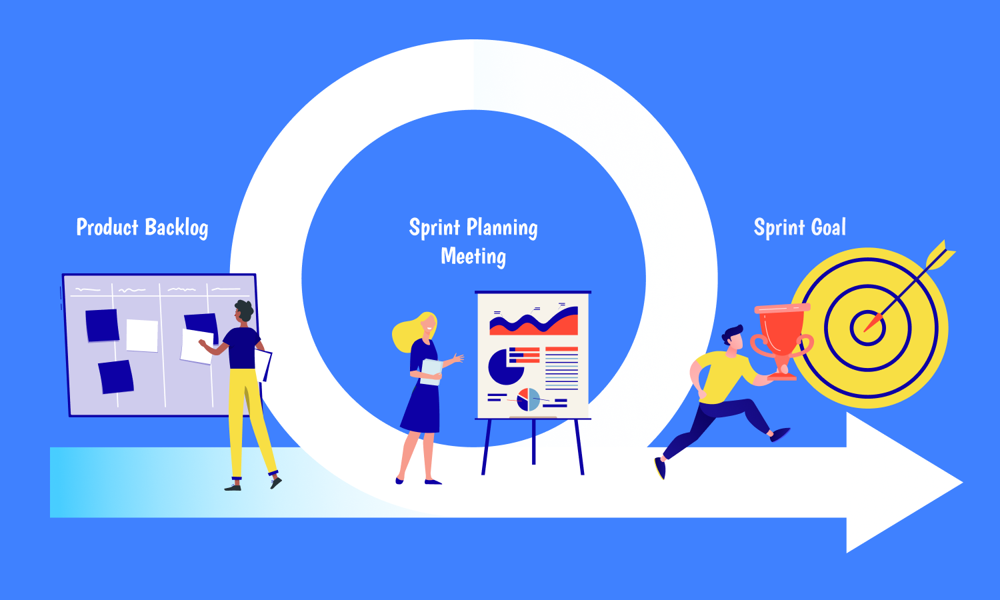
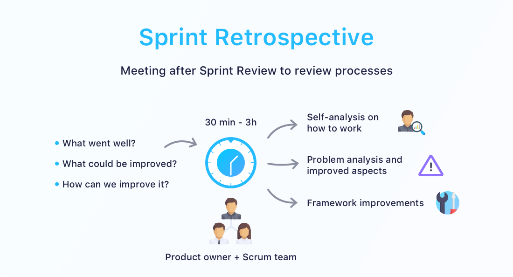

El Spring Meeting Planning, es uno de los eventos fundamentales en la metodología Scrum. Se lleva a cabo al inicio de cada Sprint y su propósito es planificar y establecer el alcance y los objetivos del próximo Sprint.
Este evento proporciona la oportunidad para que el Equipo Scrum, que incluye al Product Owner, el Scrum Master y el Equipo de Desarrollo, colabore y establezca un plan para el trabajo que realizará durante el Sprint. Durante el Spring Meeting Planning, el Equipo de Desarrollo selecciona las tareas del Product Backlog que se incluirán en el Sprint Backlog y se establece el Sprint Goal, que es el objetivo específico que se espera lograr al final del Sprint.
El Spring Meeting Planning es esencial para el éxito del Sprint, ya que permite que el Equipo Scrum comprenda claramente los elementos del Backlog del Producto seleccionados para el Sprint y se alinee en torno a un objetivo común.

Características
Se realiza al inicio de cada Sprint.
Participan el Product Owner, el Scrum Master y el Equipo de Desarrollo.
Sirve para definir el alcance y los objetivos del Sprint.
Es un evento de tiempo limitado, cuya duración depende del tamaño del Sprint. Por lo general, se planifica una duración de 4 horas para un Sprint de 2 semanas.
Se centra en la colaboración y la comunicación efectiva entre los miembros del Equipo Scrum.
Permite aclarar dudas y obtener detalles adicionales sobre los elementos del Backlog del Producto.
Promueve el compromiso del equipo con el objetivo del Sprint.
Partes del Spring Meeting Planning
El Spring Meeting Planning se divide en las siguientes partes:
Revisión del Sprint anterior: En esta fase, el Equipo Scrum revisa el trabajo realizado durante el Sprint anterior y evalúa los resultados obtenidos. También se discuten las lecciones aprendidas y las mejoras que se pueden aplicar en el próximo Sprint.
Establecer el objetivo del Sprint: El Product Owner presenta los elementos del Backlog del Producto que considera prioritarios para el próximo Sprint. Luego, en conjunto con el Equipo de Desarrollo, se define el objetivo que se espera lograr al final del Sprint. Este objetivo se conoce como el Sprint Goal y proporciona una guía clara para el equipo durante el Sprint.
Identificar elementos del Sprint: El Equipo de Desarrollo analiza y selecciona las tareas específicas del Backlog del Producto que serán incluidas en el Sprint Backlog en función de la capacidad del equipo y el objetivo acordado.
Desarrollar el Plan: En esta fase, el Equipo de Desarrollo diseña y crea un plan detallado para completar las tareas seleccionadas del Backlog del Producto. Se identifican las dependencias entre tareas y se estima el tiempo necesario para su finalización.
Establecer la capacidad del equipo: El Equipo de Desarrollo estima cuánto trabajo puede realizar durante el Sprint, teniendo en cuenta las vacaciones, días festivos u otros compromisos que puedan afectar la disponibilidad de los miembros del equipo.
Etapas del Spring Meeting Planning
El Spring Meeting Planning se divide en las siguientes etapas:
Preparación: Antes del evento, el Product Owner revisa y ordena los elementos del Backlog del Producto según su prioridad. Además, el Equipo de Desarrollo debe familiarizarse con los elementos de alto nivel que forman parte del Backlog del Producto.
Revisión: En esta etapa, el Equipo de Desarrollo inspecciona los elementos del Backlog del Producto y plantea preguntas o inquietudes al Product
Owner para obtener una comprensión clara de cada elemento.
Establecer el objetivo: El Product Owner presenta el objetivo del Sprint (Sprint Goal) y los elementos del Backlog del Producto que contribuirán a alcanzar dicho objetivo. Se resuelven dudas y se aclara el alcance del Sprint.
Planificación del Sprint: En esta fase, el Equipo de Desarrollo colabora para crear un plan detallado que incluye las tareas necesarias para completar las tareas seleccionadas del Backlog del Producto, así como las estimaciones de tiempo y cualquier dependencia entre tareas.
Compromiso del equipo: Al final del Spring Meeting Planning, el Equipo Scrum debe estar comprometido con el objetivo del Sprint y tener una comprensión clara de las tareas que se llevarán a cabo durante el Sprint.
Sprint Review
El Sprint Review es otro evento clave en Scrum que tiene lugar al final de cada Sprint. En esta reunión, el Equipo Scrum presenta el trabajo completado durante el Sprint al Product Owner y a otros stakeholders relevantes.
El objetivo del Sprint Review es demostrar el incremento de producto alcanzado durante el Sprint y obtener retroalimentación para ajustar el Backlog del Producto según las necesidades cambiantes del negocio o del mercado.
En la reunión, el Equipo de Desarrollo presenta las funcionalidades implementadas, los cambios realizados y cualquier otro progreso significativo. El Product Owner y los stakeholders proporcionan comentarios y realizan preguntas para asegurarse de que el trabajo realizado cumpla con sus expectativas.
El resultado del Sprint Review puede ser un incremento de producto que esté "Terminado" y listo para su lanzamiento o entrega, o bien, puede ser un conjunto de funcionalidades parcialmente implementadas que requieran más trabajo en futuros Sprints.
Sprint Retrospective
El Sprint Retrospective es otro evento esencial en Scrum que tiene lugar inmediatamente después del Sprint Review y antes del inicio del siguiente Sprint. En esta reunión, el Equipo Scrum reflexiona sobre el Sprint que acaba de finalizar y discute formas de mejorar su eficiencia y efectividad.
El objetivo del Sprint Retrospective es identificar qué funcionó bien durante el Sprint (para seguir haciéndolo) y qué se puede mejorar para que el equipo sea aún más efectivo en el próximo Sprint.
El Scrum Master facilita la reunión y guía al equipo a través de las siguientes preguntas:
¿Qué cosas hicieron bien durante el Sprint?
¿Qué cosas podrían haber hecho mejor?
¿Qué acciones pueden tomar para mejorar en el próximo Sprint?
El Equipo de Desarrollo identifica y registra las mejoras acordadas para implementar en el siguiente Sprint, y estas acciones se incorporan al Backlog del Sprint para su seguimiento.

Beneficios del Spring Meeting Planning
El Spring Meeting Planning ofrece varios beneficios para el desarrollo de proyectos utilizando la metodología Scrum:
Establece una dirección clara para el equipo al definir el objetivo del Sprint (Sprint Goal).
Permite que el Equipo Scrum colabore y resuelva dudas antes de iniciar el Sprint.
Mejora la estimación de tiempo y recursos necesarios para completar el trabajo del Sprint.
Fomenta la transparencia y la comunicación entre el Product Owner y el Equipo de Desarrollo.
Facilita la identificación temprana de posibles obstáculos y dependencias.
Proporciona una oportunidad para la revisión y mejora continua del proceso de desarrollo.
Incrementa la eficiencia y productividad del equipo al tener un plan claro y acordado.
Reduce el riesgo de desviaciones o cambios no deseados durante el Sprint.
Mejora la satisfacción del cliente al entregar valor en cada Sprint.
Permite una mayor adaptabilidad a los cambios y prioridades del negocio.
Ejemplo: Spring Meeting Planning en un Equipo de Desarrollo de Software
Imaginemos un equipo de desarrollo de software que trabaja en un proyecto de desarrollo de una aplicación móvil. El equipo sigue la metodología Scrum para organizar su trabajo en Sprints de 2 semanas.
Antes del inicio de un nuevo Sprint, el Product Owner ha priorizado los elementos del Backlog del Producto, y el Equipo de Desarrollo ha estimado el esfuerzo necesario para completar cada elemento. Todos los miembros del equipo están listos para el Spring Meeting Planning.
En la reunión, el Product Owner presenta los elementos del Backlog del Producto que considera de mayor valor para el siguiente Sprint. Después de discutir con el equipo, se decide que el objetivo del Sprint será "Implementar la funcionalidad de inicio de sesión y registro de usuarios".
El Equipo de Desarrollo identifica las tareas necesarias para lograr el objetivo del Sprint, como diseñar las pantallas de inicio de sesión y registro, desarrollar las funcionalidades correspondientes, realizar pruebas de aceptación y de rendimiento, y realizar una revisión de código.
El equipo se toma
el tiempo para estimar el esfuerzo requerido para cada tarea y evalúa su capacidad para completarlas en el Sprint. Basado en esta información, el equipo acuerda cuántas tareas puede incluir en el Sprint sin comprometer la calidad del trabajo.
Finalmente, el equipo se compromete a realizar las tareas acordadas durante el Sprint y a lograr el objetivo establecido. Durante el Sprint, el equipo realiza reuniones diarias de seguimiento para mantenerse alineado y abordar cualquier impedimento que surja.
Al finalizar el Sprint, el equipo realiza una revisión del Sprint y una retrospectiva para identificar oportunidades de mejora y ajustar su proceso de trabajo de cara al próximo Sprint.